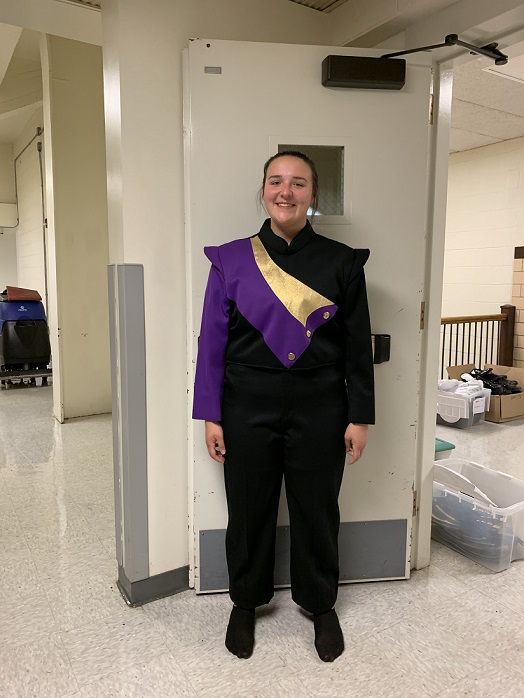

MY LIFE
I am currently take two of Parkland's Computer Science classes, and I work as a teller at the Bank of Rantoul. My life is crazy busy, but it's also a lot of fun and I love what I do.
Hopefully after all of my crazy high school schedule is finished, I will be at UIUC studing Astronomy, which has been my goal since 8th grade.